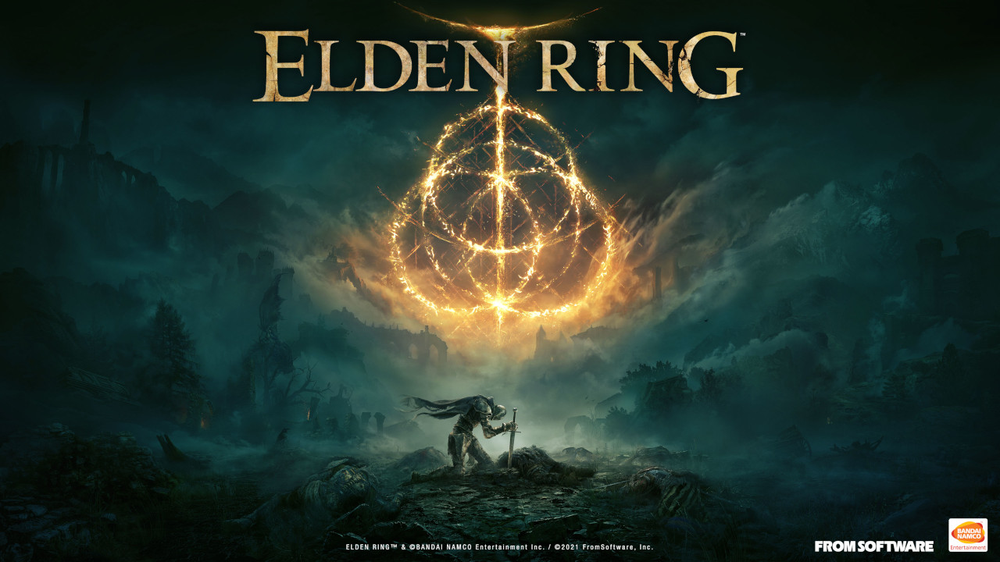

Maybe you've got a giant backlog, or maybe you just aren't sure what games are worth getting. If you haven't tried these two out, I'd recommend giving them a shot.
Elden Ring
GOTY 2022

You are a Tarnished, a warrior descended from Godfrey, First Elden Lord. Long ago, your people were exiled from the Lands Between and you died in exile. But now, you feel the long-lost call of Grace and rise from your tomb to claim your rightful place as Elden Lord.
FromSoftware, the studio that developed Elden Ring, is notorious for developing difficult games. Dark Souls, Bloodborne, Sekiro, and now Elden Ring. You'll have to excuse me if I sing FromSoftware's praises in this review, but over the years they have not been afraid to experiment, with the original Dark Souls featuring a tight tangle of a world that loop back to the central hub in jaw-dropping shortcuts, to the very linear and level-oriented design of Dark Souls 3. Elden Ring draws upon each of their previous titles with great success, and my main complaint is that there is too much game!
I could write and write about how these games use difficulty as a storytelling device and to teach that it is okay to fail, or how the communities surrounding each of these games are filled with lovely people, but I'm out of time.
Roadwarden
Overshadowed by Citizen Sleeper

I didn't expect to like Roadwarden as much as I did, if I can be honest with you. Most of the games I play these days are fast, requiring constant attention and hours of practice to compete in.
Roadwarden is different, calling back to older times when stories would draw you into a world and you wished you could sit down and talk with each person you met. You are the new Roadwarden, sent to the north to negotiate trade agreements with each of the settlements that call this dangerous land their home. Along the way, you have to carefully consider how best to spend your time, with each action shaving precious hours away until the winter, when the snows will fall and seal the north away until the next year.
Roadwarden made me think. It asked me what I was willing to do to 'win' the game, and in the end I decided I would rather sit down and take the scenic route. I secured some of the trade agreements, made some friends and enemies, and wished I could stay for just a few more days when winter began to close in. Even now, several months after playing it, I still have an itch to go back and try to uncover a few more secrets.